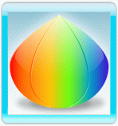
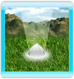
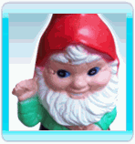

Wenn du im Abenteuermodus spielst, erkundet Follie
Elilia den mysteriösen Planeten wo sie abgestürzt ist.
Bewege Follie zu dem hervorgehobenen Ort in dem du mit der Wii-Fernbedienung auf den TV zeigst und den A-Knopf drückst. Falls Follie den Ort nicht erreichen kann wird der Zeiger rot.
Während Follie den Planeten erkundet wird sie auf unterschiedliche Objekte, Charaktere und Orte treffen:
- Flowerwork Samen:
Diese Samen wurden während des Absturzes verstreut. Sammel diese um Flowerwork Blumen an den dafür vorgesehenden Stellen zu pflanzen und Zugang zu neuen Levels zu erhalten.
Wenn Follie ein neues Level abschliesst bekommt sie zusätzliche Samen als Belohnung.
- Pflanzstellen:
Jede Pflanzstelle wo Samen gepflanzt werden können ist ein neues Level.
Bevor ein Level das erste mal gespielt werden kann, müsst ihr im Besitz der richtigen Samen sein. Navigiere den Zeiger über eine Pflanzstelle um herrauszufinden welche Samen benötigt werden.
Wenn ein Level bereits beendet wurde kann es immer wieder gespielt werden (keine extra Samen werden benötigt). Ein abgeschlossenes Level belohnt dich mit neuen Samen sowie einer Bewertung von 1-5 Sternen.
- Gemeine Gartenzwerge:
Die gemeinen Gartenzwerge erschweren es Follie die Welt zu erkunden.
Follie benutzt Star Power um sie zu beschwichtigen was es Follie ermöglicht zu passieren. Die Zahl welche über jedem Gnom angezeigt wird ist das Minimum an Star Power welches Follie benötigt um sie zu beschwichtigen.
Stelle dich direkt neben einen Gnom um ihn zu beschwichtigen.
- Tips:

Während Follie den Planeten erkundet findet sie Zeichen und Hinweise. Diese enthalten Strategien und Tips für das Spiel, auch enthüllen sie die Geschichte und Geheimnisse von Elilia.
Erfahrene Spieler können die Hinweise im Optionsmenü ausschalten.
- Planetenbewohner:

Follie trifft ab und zu auf einen Bewohner des Planeten Elilia. Sie helfen Follie mit umfangreichen Informationen. Auch verkaufen sie Follie neue Fähigkeiten (gegen Münzen).
Um mit einem Bewohner zu sprechen laufe direkt vor ihn.
- Münzen:
Sammel Münzen welche über die ganze Welt verteilt sind indem du über sie läufst.
Wenn du einen Bewohner triffst kannst du evtl. eine neue Fähigkeit für Münzen kaufen.